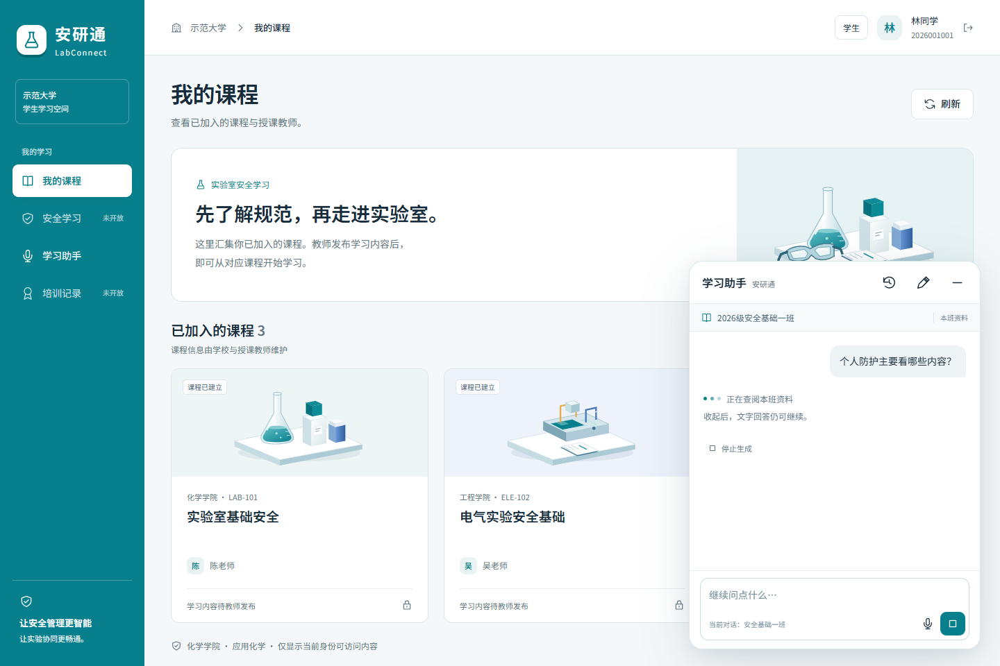
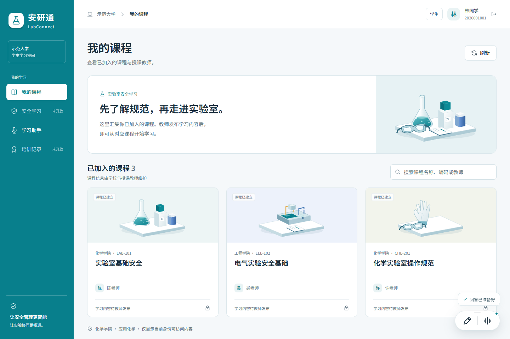
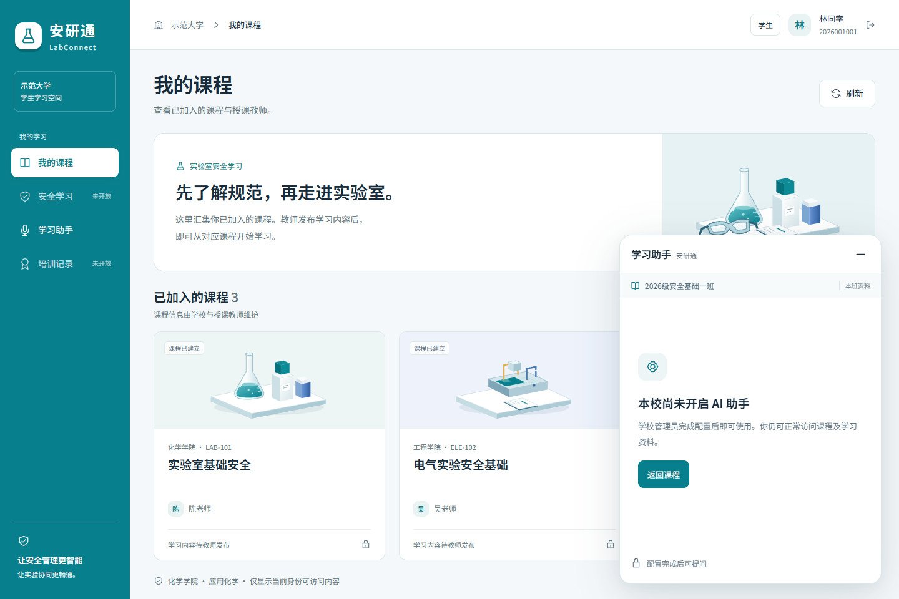
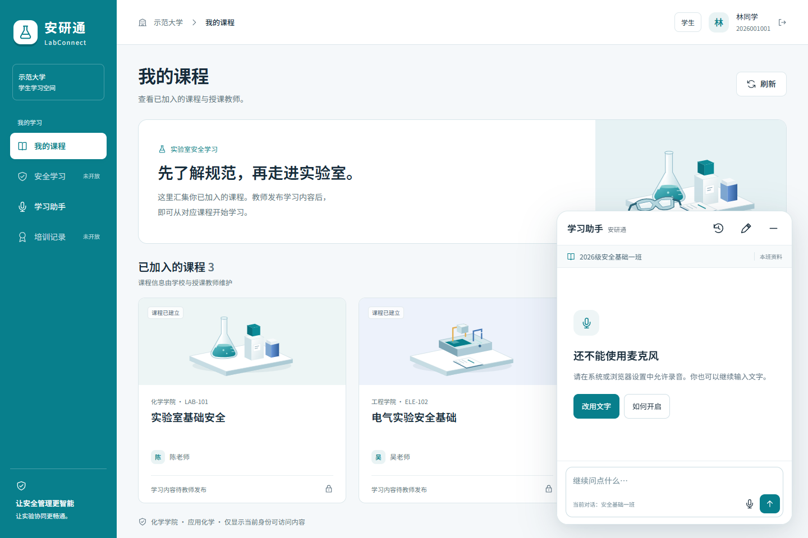
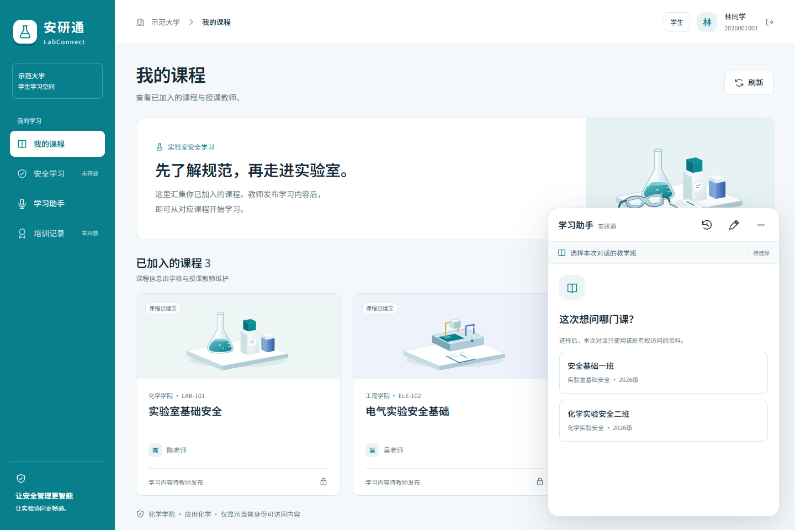
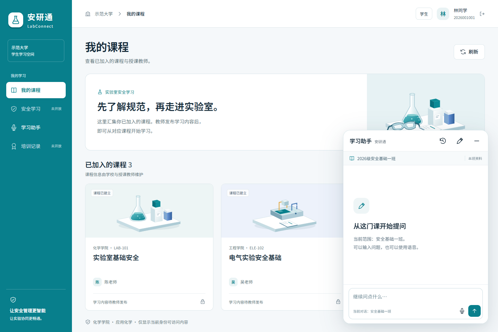

web-generating · 文字生成中

web-complete · 收起后的完成提示
web-exam · 正式考试暂停
web-unknown · 考试状态待核实

web-unconfigured · 学校尚未配置
web-offline · 服务连接失败

web-mic-denied · 麦克风权限未开启

web-context · 选择授权教学班

web-new · 新对话继承当前班